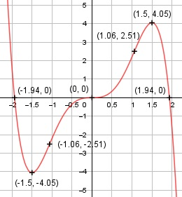

Aufgabe 68 f(x) = 3x3 - 0,8x5 f'(x) = 9x2 - 4x4, f''(x) = 18x - 16x3, f'''(x) = 18 - 48x2 Definitionsbereich: -∞ < x < ∞ Wertebereich: -∞ < f(x) < ∞ Asymptoten: - Symmetrie zur y-Achse bzw. zum Punkt (0|0): f(-x) = 3(-x)3 – 0,8(-x)5 f(-x) = -3x3 + 0,8x5 ≠ f(x) --> keine Achsensymmetrie -f(-x) = -(-3x3 + 0,8x5) -f(-x) = 3x3 - 0,8x5 = f(x) --> Punktsymmetrie nur ungerade Exponenten von x Nullstellen: f(x) = 0 3x3- 0,8x5 = 0 x3 * (3 - 0,8x2) = 0 x3 = 0 | x1 = 0 3 - 0,8x2 = 0 |+0,8x2 0,8x2 = 3 |:0,8 x2 = 3,75 |ⱱ x2,3 = ± 1,94 N1(0|0), N2(1,94|0), N3(-1,94|0) Schnittpunkt mit der y-Achse: x = 0 f(0) = 3 * 03- 0,8 * 05 = 0 Sy(0|0) Extrempunkte: f'(x) = 0 9x2 - 4x4 = 0 x2 * (9 - 4x2) = 0 x2 = 0 |ⱱ x1,2 = 0, f(0) = 0 9 - 4x2 = 0 |+4x2 4x2 = 9 |:4 x2 = 2,25 |ⱱ x3,4 = ± 1,5 f(1,5) = 3 * 1,53 - 0,8 * 1,55 = 4,05 f(-1,5) = -4,05 wegen Punktsymmetrie f''(0) = 18 * 0 - 16 * 03 = 0 f''(1,5) = 18 * 1,5 - 16 * 1,53 < 0 --> Hochpunkt (1,5|4,05) f''(-1,5) = 18 * (-1,5) - 16 * (-1,5)3 > 0 --> Tiefpunkt (-1,5|-4,05) Wendepunkte: f''(x) = 0 18x - 16x3 = 0 x * (18 - 16x2) = 0 x1 = 0 18 - 16x2 = 0 |+16x2 16x2 = 18 |:16 x2 = 1,125 |ⱱ x2,3 = ± 1,06 f(1,06) = 3 * 1.063- 0,8 * 1,065 = 2,51 f(-1,06) = -2,51 wegen Punktsymmetrie f'''(0) = - 6 * 02 = 0 f''''(0) = -12 * 0 = 0 f'''''(0) = - 12 ≠ 0, f'(0) = 0, f''(0) = 0 --> Grad der Ableitung ungerade --> Sattelpunkt (0|0) f'''(1,06) = 18 - 48 * 1,06 ≠ 0 --> Wendepunkt (1,06|2,51) f'''(-1,06) = 18 - 48 * (-1,06) ≠ 0 --> Wendepunkt (-1,06|-2,51) Graph:
